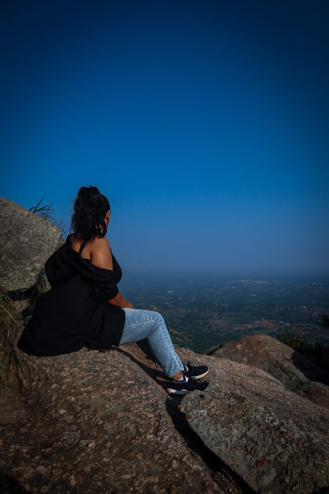

Sakleshpur Travel Guide
Last Updated: September, 2023
Sakleshpur, nestled in the Western Ghats of Karnataka, is a serene and scenic destination that offers a perfect blend of natural beauty and adventure. If you're planning a trip to this tranquil hill station, here's a comprehensive travel guide to help you make the most of your visit. Best Time to Visit: Sakleshpur is a year-round destination, but the best time to visit is during the post-monsoon season (October to March) or the monsoon season (June to September). During these periods, the lush greenery is at its peak, and the weather is pleasant. Getting There: By Road: Sakleshpur is well-connected by road. You can reach Sakleshpur by driving from major cities like Bangalore (about 220 km) and Mangalore (about 130 km). The roads offer picturesque views. By Train: The nearest railway station is Sakleshpur Railway Station. However, the more accessible option is the Hassan Railway Station, which is well-connected to other major cities. Places to Visit: Bisle Ghat: Famous for its stunning viewpoints, Bisle Ghat offers panoramic views of the Western Ghats and is ideal for nature enthusiasts and photographers. Manjarabad Fort: This historic fort with a unique star-shaped design offers a glimpse into the past. The surrounding landscapes are beautiful. Jenukal Gudda: This is a favorite spot for trekkers, offering an adventurous hike and magnificent views from the top. Mookanamane Waterfalls: A picturesque waterfall surrounded by lush green forests, it's an ideal spot for a refreshing dip. Sakleshwara Temple: A beautiful temple with Dravidian architecture set against a stunning backdrop of hills and coffee plantations. Betttada Byraveshwara Temple: A unique temple situated under a massive rock, it's a must-visit for its natural and architectural beauty. Outdoor Activities: Trekking: There are various trekking trails in and around Sakleshpur that cater to different skill levels. Coffee Estate Tours: Explore the coffee plantations that are a hallmark of this region. You can also engage in coffee picking during the season. River Rafting: The Hemavathi River offers opportunities for white water rafting, especially during the monsoon season. Accommodation: Sakleshpur offers a range of accommodation options, from luxury resorts to homestays in coffee estates. Some popular choices include the Tamara Coorg, The Hills, and various homestays like Clove Villa and Hassan Coffee Land. Local Cuisine: Sakleshpur is known for its authentic South Indian cuisine. Don't miss trying local specialties like akki roti, neer dosa, and fresh filter coffee. You can also savor delicious Malnad cuisine. Tips: Check the weather conditions and plan your visit accordingly. Carry appropriate clothing, especially during the monsoon season. Respect the local customs and traditions, especially when visiting temples. Make bookings for accommodation and activities in advance, especially during the peak season. Sakleshpur is a haven for nature lovers and adventure seekers, offering a perfect escape from the hustle and bustle of city life. With its lush landscapes, cool climate, and numerous attractions, you're sure to have a memorable and refreshing experience in this picturesque hill station.